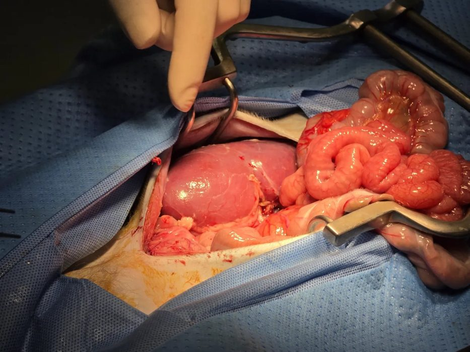
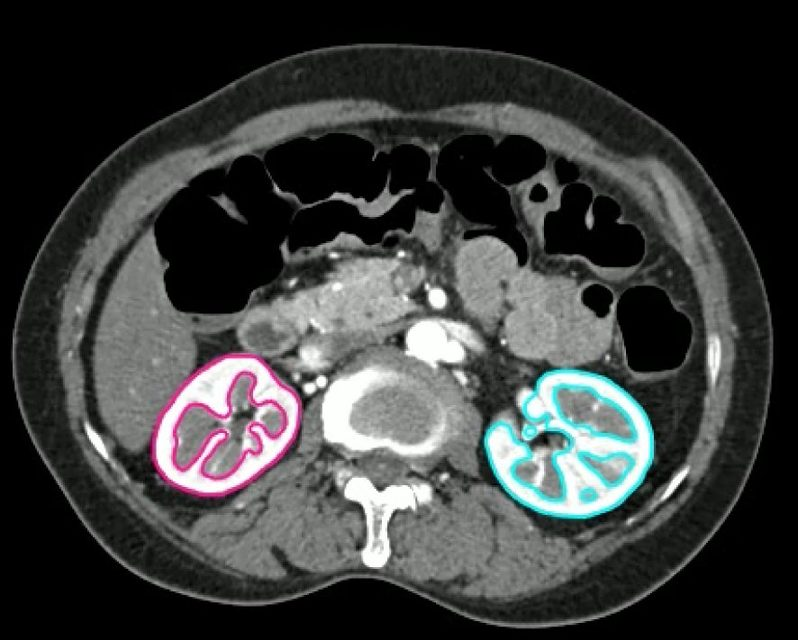
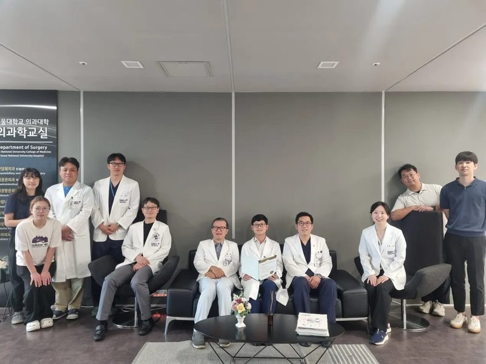
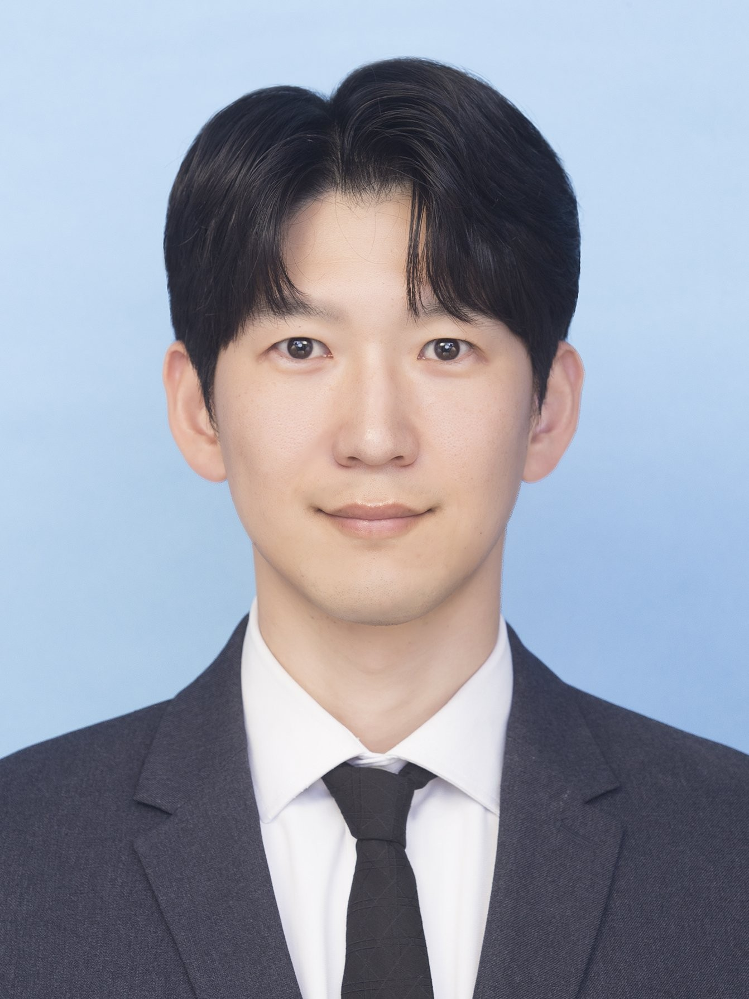
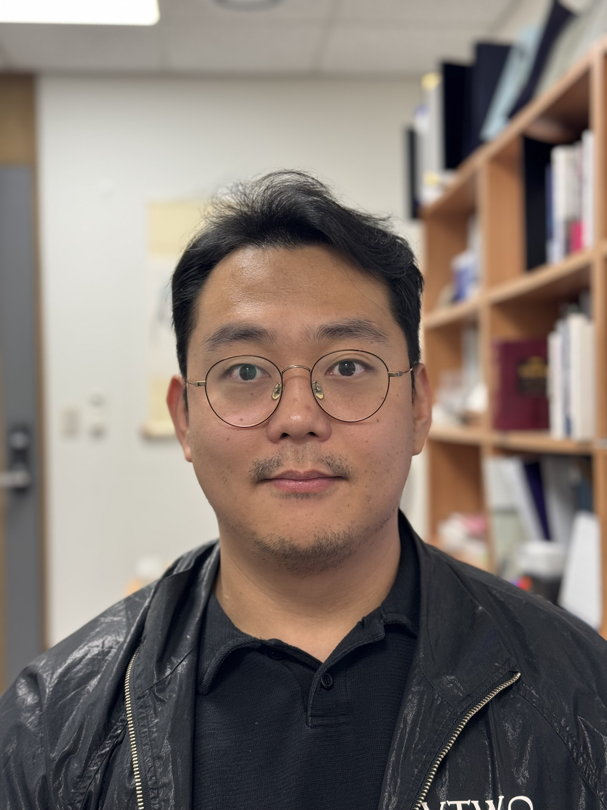

Surgical innovation, artificial intelligence, and translational research — integrated to improve outcomes in kidney transplantation.
The SNU Transplantation Innovation Lab aims to improve outcomes in kidney transplantation, xenotransplantation, and transplant surgery through integrated clinical research, translational science, artificial intelligence, biomarker discovery, and surgical innovation.
We bring together multicenter clinical registries, immune monitoring platforms, advanced analytics, preclinical translational models, and surgical technology to support safer living donation, longer graft survival, and more precise post-transplant care.
Clinical insight, mechanistic research, and computational methods — addressing unmet needs across the transplant continuum.

Our xenotransplantation program uses preclinical large-animal models to evaluate graft function, immune injury, complement activation, ischemia-reperfusion injury, and biomarker-based monitoring strategies required for responsible clinical translation.
AI-assisted CT segmentation quantifies total and cortical kidney volume, supports individualized living donor selection, and enables structural–functional prediction for donor safety and recipient outcomes.

Real-world outcome research to improve graft survival, patient safety, and center-level performance.
AI-assisted volumetry, remnant kidney function prediction, and CDSS for safer living kidney donation.
Mechanistic and translational studies on early graft injury, tissue repair, and allograft protection.
Pig-to-NHP models, immune monitoring, molecular biomarkers, and translational pathways.
Predictive modeling, dynamic risk prediction, and deployable CDSS for transplant care.
dd-cfDNA, DSA, tacrolimus, BKPyV, and longitudinal immune data for precision monitoring.
Robotic kidney transplantation, minimally invasive approaches, and simulation-based education.
K-QIPS multicenter registry infrastructure for quality improvement and outcomes research.
Complex vascular reconstruction, popliteal entrapment, portomesenteric vein interventions.
39 peer-reviewed publications spanning kidney transplantation, xenotransplantation, AI, biomarkers, and clinical prediction.
Surgeon-scientists, PhD researchers, clinical fellows, students, and research coordinators advancing transplantation science.

Professor of Surgery, Seoul National University College of Medicine
Director, Organ Transplantation Center, Seoul National University Hospital
Head, Division of Transplantation and Vascular Surgery, SNUH
Associate Professor, Division of Transplantation and Vascular Surgery
Seoul National University Hospital, Seoul, Korea
Assistant Professor, Division of Transplantation and Vascular Surgery
Seoul National University Hospital, Seoul, Korea

Sang Wan Kim PhD
Dong Hoon Jeong PhD CandidateSelected articles and interviews on transplantation research, surgical innovation, and AI-enabled care.
Interview on transplantation and long-term immunosuppressive therapy.
Read more ↗Feature article on organ donation, public trust, and system-level barriers.
Read more ↗National recognition for clinical validation of robotic kidney transplantation.
Read more ↗Interview introducing kidney transplantation, surgical innovation, and clinical research.
Read more ↗Coverage of the 2025 Health and Medical R&D Excellent Achievements.
Read more ↗Media coverage of single-port robotic kidney transplantation — Asia first.
Read more ↗AI-assisted kidney volume research developed with the SNUH transplant team.
Read more ↗AI kidney cortex volumetry for safer decision-making in older living kidney donors.
Read more ↗Research on cysteine-based detection of ischemic kidney injury in deceased donor kidneys.
Read more ↗Multicenter real-world study on tacrolimus trough levels and long-term transplant outcomes.
Read more ↗Public-facing article on tacrolimus exposure and kidney transplant survival.
Read more ↗Interview on the clinical translation of xenotransplantation.
Read more ↗For research collaboration, fellowship opportunities, or academic inquiries, please reach out through the lab.